Lecture 1
Introduction
- Databases can have multiple tables. Last class, we saw a database of books longlisted, or nominated, for the International Booker Prize. We will now see that database has many different tables inside it — for books, authors, publishers and so on.
- First, open up the database using SQLite in the terminal of your Codespace.
- We can use the following SQLite command to see all the tables in our database:
.tablesThis command returns the names of the tables in
longlist.db— 7 in all. - These tables have some relationships between them, and hence we call the database a relational database. Look at the list of tables in
longlist.dband try to imagine relationships between them. Some examples are:- Authors write books.
- Publishers publish books.
- Books are translated by translators.
-
Consider our first example. Here is a snapshot of the
authorsandbookstables with the author name and book title columns!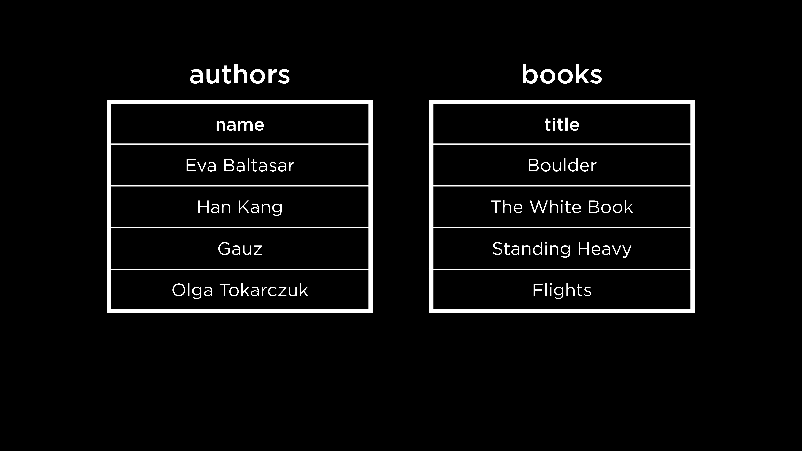
- Just looking at these two columns, how can we tell who wrote which book? Even if we assume that every book is lined up next to its author, just looking at the
authorstable would give us no information about the books written by that author. - Some possible ways to organize books and authors are…
-
the honor system: the first row in the
authorstable will always correspond to the first row in thebookstable. The problem with this system is that one may make a mistake (add a book but forget to add its corresponding author, or vice versa). Also, an author may have written more than one book or a book may be co-written by multiple authors. -
going back to a one-table approach: This approach could result in redundancy (duplication of data) if one author writes multiple books or if a book is co-written by multiple authors. Below is a snapshot of the one-table approach with some redundant data.
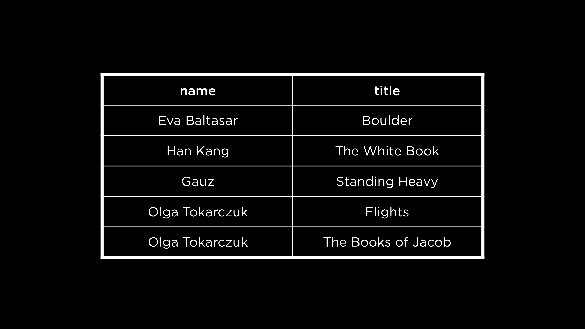
-
the honor system: the first row in the
- After considering these ideas, it seems like having two different tables is the most efficient approach. Let us look at some different ways in which tables can be related to each other in relational databases.
-
Consider this case, where each author writes only one book and each book is written by one author. This is called a one-to-one relationship.
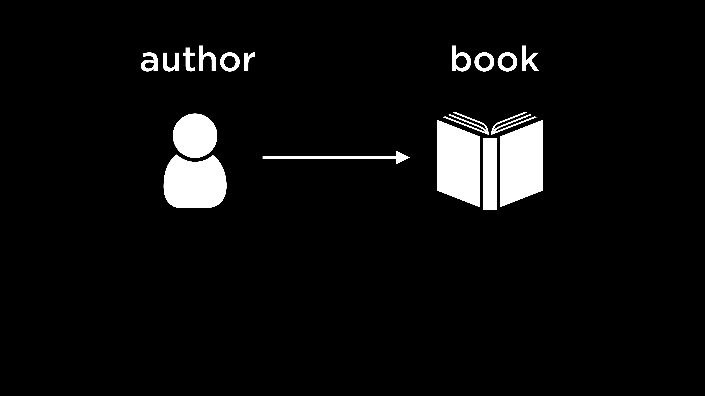
-
On the other hand, if an author can write multiple books, the relationship is a one-to-many relationship.
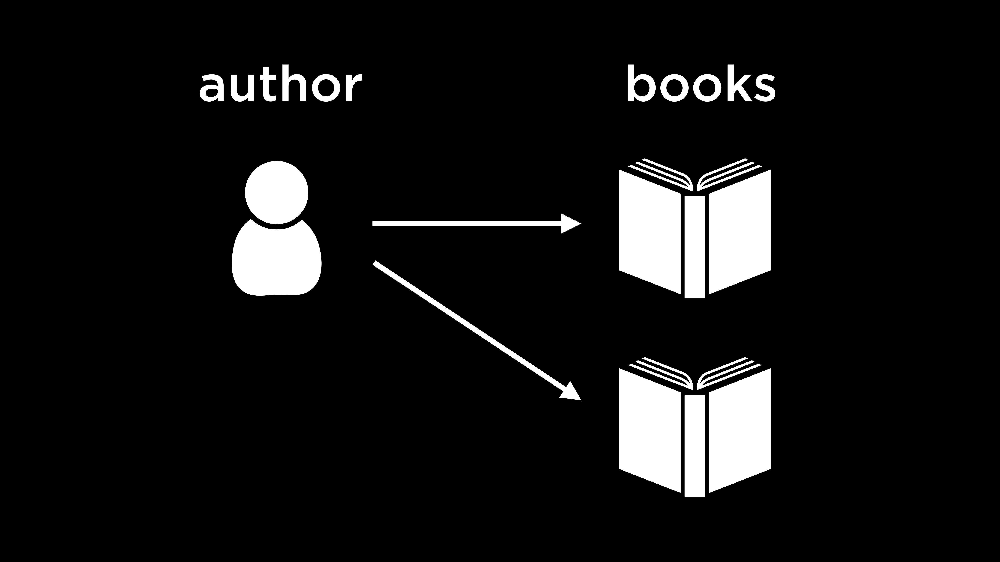
-
Here, we see another situation where not only can one author write multiple books, but books can also be co-written by multiple authors. This is a many-to-many relationship.
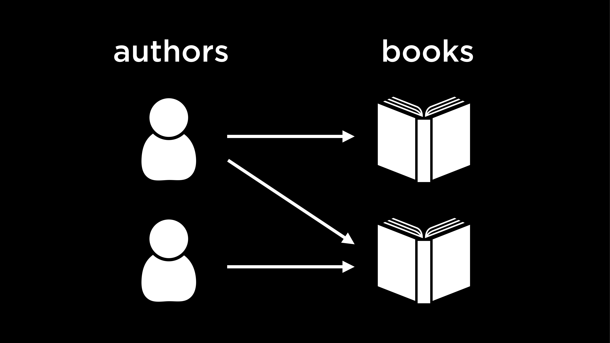
Entity Relationship Diagrams
- We just described one-to-one, one-to-many and many-to-many relationships between tables in a database. It is possible to visualize such relationships using an entity relationship (ER) diagram.
-
Here is an ER diagram for the tables in
longlist.db.erDiagram "Author" }|--|{ "Book" : "wrote" "Publisher" ||--|{ "Book" : "published" "Translator" }o--|{ "Book" : "translated" "Book" ||--o{ "Rating" : "has" - Each table is an entity in our database. The relationships between the tables, or entities, are represented by the verbs that mark the lines connecting entities.
- Each line is this diagram is in crow’s foot notation.
- The first line with a circle looks like a 0 marked on the line. This line indicates that there are no relations.
- The second line with a perpendicular line looks like a 1 marked on the line. An entity with this arrow has to have at least one row that relates to it in the other table.
-
The third line, which looks like a crow’s foot, has many branches. This line means that the entity is related to many rows from another table.
- For example:
-
We read the notation left to right. An author writes one book (or, every author can have one book associated with them).
-
Now, not only does an author write one book but a book is also written by one author.
-
With this addition, an author writes at least one book and a book is written by at least one author. To rephrase, an author could be associated with one or multiple books and a book can be written by one or multiple authors.
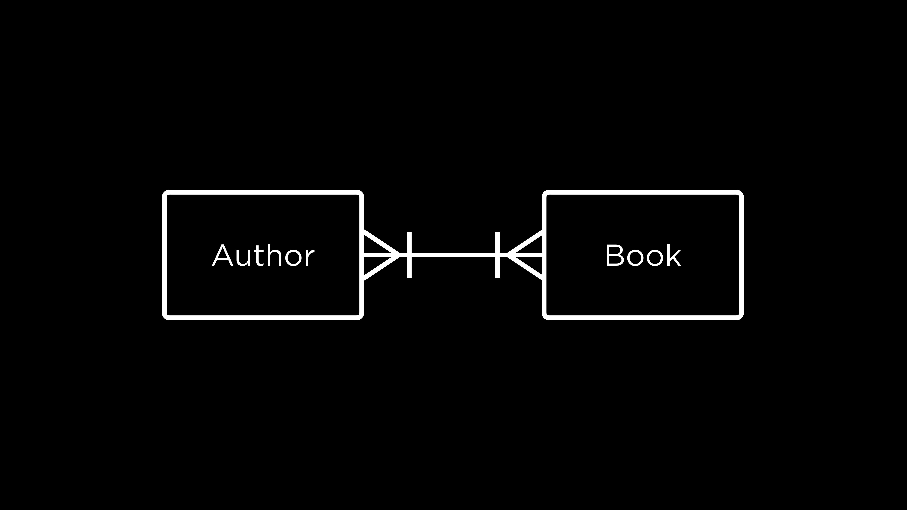
-
-
Let us revisit the ER diagram for our database.
erDiagram "Author" }|--|{ "Book" : "wrote" "Publisher" ||--|{ "Book" : "published" "Translator" }o--|{ "Book" : "translated" "Book" ||--o{ "Rating" : "has" - On observing the lines connecting the Book and Translator entities, we can say that books don’t need to have a translator. They could have zero to many translators. However, a translator in the database translates at least one book, and possibly many.
Questions
If we have some database, how do we know the relationships among the entities stored inside of it?
- The exact relationships between entities are really up to the designer of the database. For example, whether each author can write only one book or multiple books is a decision to be made while designing the database. An ER diagram can be thought of as a tool to communicate these decisions to someone who wants to understand the database and the relationships between its entities.
Once we know that a relationship exists between certain entities, how do we implement that in our database?
- We will shortly see how we can use keys in SQL to relate tables to one another.
Keys
Primary Keys
-
In the case of books, every book has a unique identifier called an ISBN. In other words, if you search for a book by its ISBN, only one book will be found. In database terms, the ISBN is a primary key — an identifier that is unique for every item in a table.
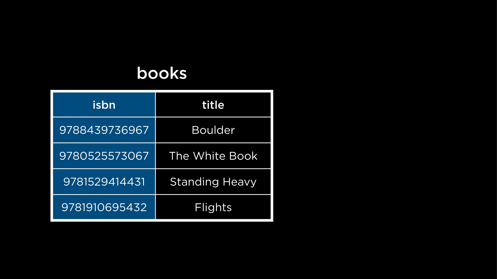
-
Inspired by this idea of an ISBN, we can imagine assigning unique IDs to our publishers, authors and translators! Each of these IDs would be the primary key of the table it belongs to.
Foreign Keys
- Keys also help relate tables in SQL.
-
A foreign key is a primary key taken from a different table. By referencing the primary key of a different table, it helps relate the tables by forming a link between them.
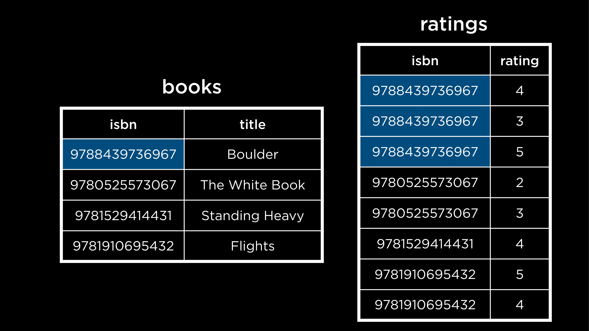
Notice how the primary key of the
bookstable is now a column in theratingstable. This helps form a one-to-many relationship between the two tables — a book with a title (found in thebookstable) can have multiple ratings (found in theratingstable). - The ISBN, as we can see, is a long identifier. If each character occupied a byte of memory, storing a single ISBN (including the dashes) would take 17 bytes of memory, which is a lot!
- Thankfully, we don’t necessarily have to use the ISBN as a primary key. We can just construct our own using numbers like 1, 2, 3… and so on as long as each book has a unique number to identify it.
-
Previously, we saw how to implement the one-to-many relationship between the
booksandratingsentities. Here’s an example of a many-to-many relationship.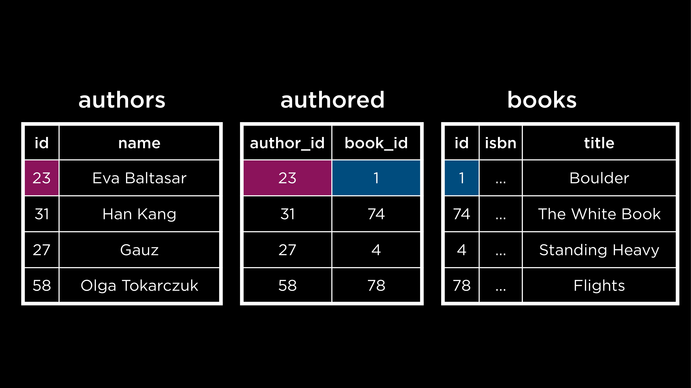
There is now a table called authored that maps the primary key of books (book_id) to the primary key of authors (author_id).
Questions
Can the IDs of the author and the book be the same? For example, if
author_idis 1 andbook_idis also 1 in theauthoredtable, will there be a mix-up?
- Tables like
authoredare called “joint” or “junction” tables. In such tables, we usually know which primary key is referenced by which column. In this case, since we know that the first column contains the primary key ofauthorsonly and the second column similarly contains the primary key ofbooksonly, it would be okay even if the values matched!
If we have a lot of joint tables like this, wouldn’t that take up too much space?
- Yes, there is a trade-off here. Tables like these occupy more space but they also enable us to have many-to-many relationships without redundancies, like we saw earlier.
On changing the ID of a book or author, does the ID get updated in the other tables as well?
- An updated ID still needs to be unique. Given that, IDs are often abstracted away and we rarely change them.
Subqueries
- A subquery is a query inside another query. These are also called nested queries.
- Consider this example for a one-to-many relationship. In the
bookstable, we have an ID to indicate the publisher, which is a foreign key taken from thepublisherstable. To find out the books published by Fitzcarraldo Editions, we would need two queries — one to find out thepublisher_idof Fitzcarraldo Editions from thepublisherstable and the second, to use thispublisher_idto find all the books published by Fitzcarraldo Editions. These two queries can be combined into one using the idea of a subquery.SELECT "title" FROM "books" WHERE "publisher_id" = ( SELECT "id" FROM "publishers" WHERE "publisher" = 'Fitzcarraldo Editions' );Notice that:
- The subquery is in parentheses. The query that is furthest inside parantheses will be run first, followed by outer queries.
- The inner query is indented. This is done as per style conventions for subqueries, to increase readability.
- To find all the ratings for the book In Memory of Memory
SELECT "rating" FROM "ratings" WHERE "book_id" = ( SELECT "id" FROM "books" WHERE "title" = 'In Memory of Memory' ); - To select just the average rating for this book
SELECT AVG("rating") FROM "ratings" WHERE "book_id" = ( SELECT "id" FROM "books" WHERE "title" = 'In Memory of Memory' ); - The next example is for many-to-many relationships. To find the author(s) who wrote the book Flights, three tables would need to be queried:
books,authorsandauthored.SELECT "name" FROM "authors" WHERE "id" = ( SELECT "author_id" FROM "authored" WHERE "book_id" = ( SELECT "id" FROM "books" WHERE "title" = 'Flights' ) );The first query that is run is the most deeply nested one — finding the ID of the book Flights. Then, the ID of the author(s) who wrote Flights is found. Last, this is used to retrieve the author name(s).
IN
- This keyword is used to check whether the desired value is in a given list or set of values.
- The relationship between authors and books is many-to-many. This means that it is possible a given author has written more than one book. To find the names of all books in the database written by Fernanda Melchor, we would use the
INkeyword as follows.SELECT "title" FROM "books" WHERE "id" IN ( SELECT "book_id" FROM "authored" WHERE "author_id" = ( SELECT "id" FROM "authors" WHERE "name" = 'Fernanda Melchor' ) );Note that the innermost query uses
=and not theINoperator. This is because we expect to find just one author named Fernanda Melchor.
Questions
What if the value of an inner query is not found?
- In this case, the inner query would return nothing, prompting the outer query to also return nothing. The outer query is thus dependent on the results of the inner query.
Is it necessary to use four spaces to indent a subquery?
- No. The number of spaces used to indent a subquery can vary, as can the length of each line in the query. But the central idea behind breaking up queries and indenting subqueries is to make them readable.
How can we implement a many-to-one relationship between tables?
- Consider the situation wherein a book is co-written by multiple authors. We would have an
authoredtable with multiple entries for the same book ID. Each of these entries would have a different author ID. It is worth noting that foreign key values can be repeated within a table, but primary key values are always unique.
JOIN
- This keyword allows us to combine two or more tables together.
-
To understand how
JOINworks, consider a database of sea lions and their migration patterns. Here is a snapshot of the database.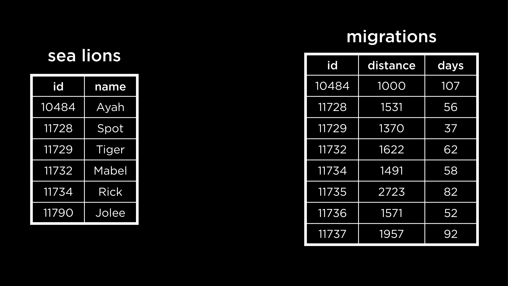
- To find out how far the sea lion Spot travelled, or answer similar questions about each sea lion, we could use nested queries. Alternately, we could join the tables
sea lionsandmigrationstogether such that each sea lion also has its corresponding information as an extension of the same row. - We can join the tables on the sea lion ID (the common factor between the two tables) to ensure that the correct rows are lined up against each other.
- Before testing this out, make sure to exit
longlist.dbusing the.quitSQLite command. Then, open upsea_lions.db. - To join the tables
SELECT * FROM "sea_lions" JOIN "migrations" ON "migrations"."id" = "sea_lions"."id";Notice that:
- The
ONkeyword is used to specify which values match between the tables being joined. It is not possible to join tables without matching values. - If there are any IDs in one table not present in the other, this row will not be present in the joined table. This kind of join is called an
INNER JOIN.
- The
- Some other ways of joining tables that allow us to retain certain unmatched IDs are
LEFT JOIN,RIGHT JOINandFULL JOIN. Each of these is a kind ofOUTER JOIN. - A
LEFT JOINprioritizes the data in the left (or first) table.SELECT * FROM "sea_lions" LEFT JOIN "migrations" ON "migrations"."id" = "sea_lions"."id";This query would retain all sea lion data from the
sea_lionstable — the left one. Some rows in the joined table could be partially blank. This would happen if the right table didn’t have data for a particular ID. - Similarly, a
RIGHT JOINretains all the rows from the right (or second) table. AFULL JOINallows us to see the entirety of all tables. - As we can observe, an
OUTER JOINcould lead to empty orNULLvalues in the joined table. - Both tables in the sea lions database have the column
id. Since the value on which we are joining the tables has the same column name in both tables, we can actually omit theONsection of the query while joining.SELECT * FROM "sea_lions" NATURAL JOIN "migrations";Notice that the result does not have a duplicate
idcolumn in this case. Also, this join works similarly to anINNER JOIN.
Questions
In the sea lions database, how are the IDs created? Do they come from the
sea_lionstable or themigrationstable?
- The ID of each sea lion likely came from researchers tracking the migration patterns of these sea lions. That is to say, the IDs were not generated in either of the tables, but were assigned at the source of the data itself.
If we are trying to join three tables, how can we know which the left or right tables are?
- For each
JOINstatement, the first table before the keyword is the left one. The one that is involved in theJOINkeyword is the right table.
When we join tables, does the resulting joined table get saved? Can we reference it later without joining again?
- In the way that we are using
JOIN, the result is a temporary table or a result set. It can be used for the duration of the query.
There’s many different kinds of
JOIN. Is there a default one we should use?
- The simplest kind — just
JOIN— is actually anINNER JOINand that’s the default for SQL.
Sets
- Before diving into sets, we will need to exit the database of sea lions and switch to
longlist.db. - On running a query, the results we see are called a result set. This is a kind of set in SQL.
-
Let’s take another example. In our database of books, we have authors and translators. A person could be either an author or a translator. If the two sets have an intersection, it is also a possible that a person could be both an author and a translator of books. We can use the
INTERSECToperator to find this set.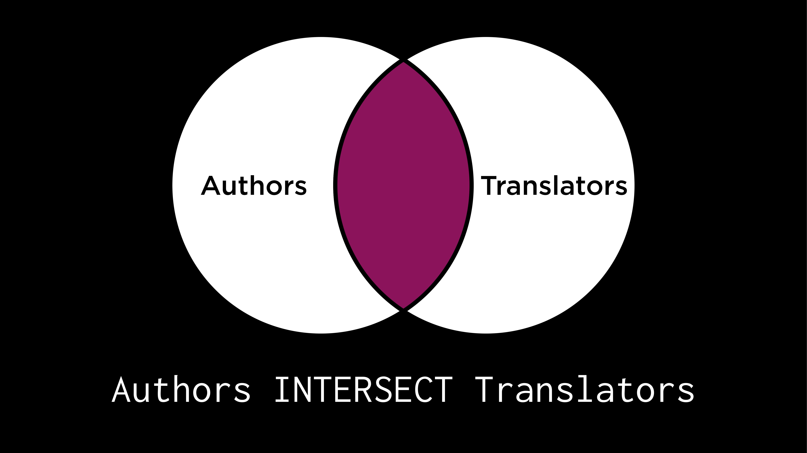
SELECT "name" FROM "translators" INTERSECT SELECT "name" FROM "authors"; -
If a person is either an author or a translator, or both, they belong to the union of the two sets. In other words, this set is formed by combining the author and translator sets.
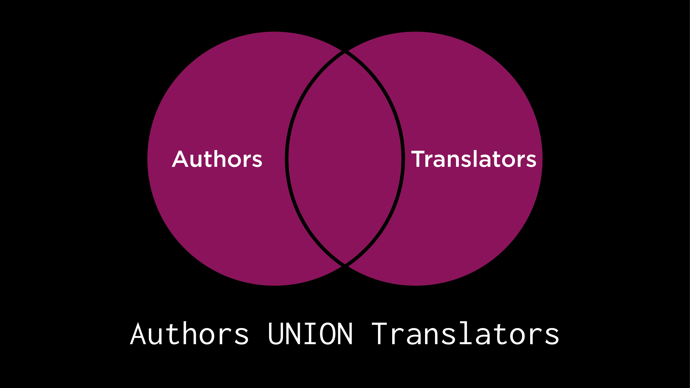
SELECT "name" FROM "translators" UNION SELECT "name" FROM "authors";Notice that every author and every translator is included in this result set, but only once!
- A minor adjustment to the previous query gives us the profession of the person in the result set, based on whether they are an author or a translator.
SELECT 'author' AS "profession", "name" FROM "authors" UNION SELECT 'translator' AS "profession", "name" FROM "translators"; -
Everyone who is an author and only an author is included in the following set. The
EXCEPTkeyword can be used to find such a set. In other words, the set of translators is subtracted from the set of authors to form this one.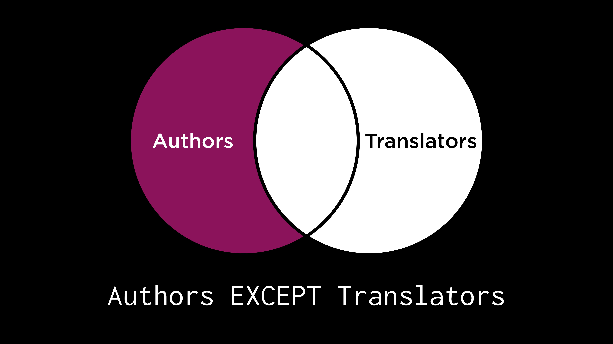
SELECT "name" FROM "authors" EXCEPT SELECT "name" FROM "translators";We can verify that no author-translator from the intersection set appears in this result set.
- Similarly, it is possible to find a set of people who are only translators using
EXCEPT. -
How can we find this set of people who are either authors or translators but not both?
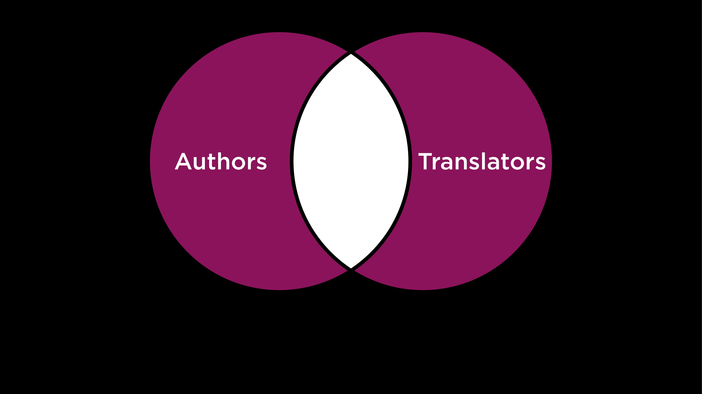
- These operators could be useful to answer many different questions. For example, we can find the books that Sophie Hughes and Margaret Jull Costa have translated together.
SELECT "book_id" FROM "translated" WHERE "translator_id" = ( SELECT "id" from "translators" WHERE "name" = 'Sophie Hughes' ) INTERSECT SELECT "book_id" FROM "translated" WHERE "translator_id" = ( SELECT "id" from "translators" WHERE "name" = 'Margaret Jull Costa' );Each of the nested queries here finds the IDs of the books for one translator. The
INTERSECTkeyword is used to intersect the resulting sets and give us the books they have collaborated on.
Questions
Could we use
INTERSECT,UNIONetc. to perform operations on 3-4 sets?
- Yes, absolutely. To intersect 3 sets, we would have to use the
INTERSECToperator twice. An important note — we have to make sure to have the same number and same types of columns in the sets to be combined usingINTERSECT,UNIONetc.
Groups
- Consider the
ratingstable. For each book, we want to find the average rating of the book. To do this, we would first need to group ratings together by book and then average the ratings out for each book (each group).SELECT "book_id", AVG("rating") AS "average rating" FROM "ratings" GROUP BY "book_id";In this query, the
GROUP BYkeyword was used to create groups for each book and then collapse the ratings of the group into an average rating! - Now, we only want to see the books that are well-rated, with an average rating of over 4.
SELECT "book_id", ROUND(AVG("rating"), 2) AS "average rating" FROM "ratings" GROUP BY "book_id" HAVING "average rating" > 4.0;Note that the
HAVINGkeyword is used here to specify a condition for the groups, instead ofWHERE(which can only be used to specify conditions for individual rows).
Questions
Is it possible to see the number of ratings given to each book?
- Yes, this would require a slight modification with the use of the
COUNTkeyword.SELECT "book_id", COUNT("rating") FROM "ratings" GROUP BY "book_id";
Is it also possible to sort the data obtained here?
-
Yes, it is. Say we wanted to find the average ratings per well-rated book, ordered in descending order.
SELECT "book_id", ROUND(AVG("rating"), 2) AS "average rating" FROM "ratings" GROUP BY "book_id" HAVING "average rating" > 4.0 ORDER BY "average rating" DESC;
Fin
- This brings us to the conclusion of Lecture 1 about relating!